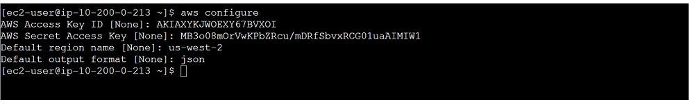

Shahzad Aslam GitHub: saslam-stack (github.com)
AWS Certified Solution Architect Associate Email: saslam79@hotmail.co.uk AWS Certified Cloud Practitioner linkedin.com/in/shahzad-aslam-556719190 HTML, CSS and JavaScript web development
Creating an Amazon RDS instance by using the AWS CLI
You can create an Amazon RDS instance by using the AWS CLI. To begin with,
I have already created two EC2 instance (AWS CLI host and KKC instance)
and VPC (KKC VPC). Read this article if need help in building a AWS VPC.
CLI Host EC2 instance has the AWS CLI installed on it as part of
provisioning. You can run AWS CLI commands to do the following:
Configure the AWS CLI.
Create the following prerequisite components required to build the Amazon RDS (relational database service) instance.
A security group firewall for the Amazon RDS instance.
Two private subnets and a database subnet group.
Create the Amazon RDS Maria DB instance.
Connecting to the CLI Host instance:
On the AWS Management Console, in the Search bar, enter and choose EC2 to
open the EC2 Management Console. In the navigation pane, choose instances.
From the list of instances, select the CLI Host EC2 instance. Choose
Connect.
On the EC2 Instance Connect tab, choose Connect.
SSH: If you prefer to use an SSH client to connect to the EC2 instance,
read this article to Connect to Your AWS EC2 Instance. Now that you are
connected to the CLI Host instance, you can configure and use the AWS CLI
to call AWS services.
Configuring the AWS CLI:
In this task, you configure the AWS CLI by providing the
configuration parameters that were made available to you when the
lab was provisioned. After configuration, you run AWS CLI commands
to interact with AWS services. To set up the AWS CLI profile with
credentials, in the EC2 Instance Connect terminal, run the following
command:
aws configure
When prompted, enter the following information:
AWS Access Key ID: Enter the value for AccessKey. (You can use IAM to
create AccessKey and secreteKey ).
AWS Secret Access Key: Enter the value for SecretKey.
Default region name: Enter your AWS region e.g. us-west-2.
Default output format: Enter json.

Now you are ready to run AWS CLI commands to interact with AWS services.
Creating prerequisite components:
You need create the prerequisite infrastructure components for the Amazon
RDS instance. Specifically, you create the following components:
KKCDatabaseSG (Security group for the Amazon RDS database)
KKCDB Private Subnet 1
KKCDB Private Subnet 2
KKCDB Subnet Group (Database subnet group)
Now, you run AWS CLI commands in the EC2 Instance Connect terminal.
First, you create the KKCDatabaseSG security group. This security group is
used to protect the Amazon RDS instance. It will have an inbound rule that
allows only MySQL requests (using the default TCP protocol and port 3306)
from instances that are associated with the KKCSecurityGroup. This rule
ensures that only the KKCInstance is able to access the database.
To create the security group, run the following command. In the command,
replace with the KKCVpcID which was created as before
building RDS database instance :
ws ec2 create-security-group \
--group-name KKCDatabaseSG \
--description "Security group for KKC database" \
--vpc-id
Final command should look like below:
aws ec2 create-security-group \
--group-name KKCDatabaseSG \
--description "Security group for KKC database" \
--vpc-id vpc-0d5f3e369fc1845f6
"GroupId": sg-0e6615ed661a7146e
Next, you create the inbound rule for the security group.
To create the inbound rule, run the following command. In the command,
replace with the GroupId value that you recorded
in the previous step, and replace with the
KKCSecurityGroupID value that can be found in the details section of the
KKC EC2 instance:
The output of the command should show that the KKCDatabaseSG security
group now has an inbound rule that allows connections from TCP port 3306
if the source of the connection is an instance that has the
KKCSecurityGroup Group ID association.
Next, you create two private subnets and a database subnet group. First,
you create KKCDB Private Subnet 1. This subnet hosts the RDS DB instance.
It is a private subnet that is defined in the same Availability Zone as
the KKCInstance.
You must assign the subnet a Classless Inter-Domain Routing (CIDR) address
block that is within the address range of the VPC but that does not
overlap with the address range of any other subnet in the VPC. This reason
is why you collected the information about the VPC and existing subnet
CIDR blocks:
KKC VPC IPv4 CIDR block: 10.200.0.0/20
KKC Public Subnet 1 IPv4 CIDR block: 10.200.0.0/24
Consider these address ranges. Can you find a suitable CIDR block for the
private subnet? One possible answer is to use the address range
10.200.2.0/23.
To create the subnet, run the following command. In the command, replace
and with the values
of KKCVpcID and KKCInstanceAZ, respectively, that can be found on AWS
management console or using AWS CLI commands.
From the output of the command, note the value for SubnetId. You use this
information later for KKCDB Private Subnet 1.
"SubnetId": subnet-08a3a0bf83f9a710e
Next, you create KKCDB Private Subnet 2. This is the extra subnet that is
required to form the database subnet group. It is an empty private subnet
that is defined in a different Availability Zone than the KKCInstance.
Similar to what you did in the previous steps, you must assign a CIDR
address block to the subnet that is within the address range of the VPC
but does not overlap with the address range of any other subnet in the
VPC. So far, you have used the following address ranges:
You use the 10.200.10.0/23 address range for this second private subnet.
For the Availability Zone for the second subnet, you can choose any other
Availability Zone (but not the one ending in a).
To create the second subnet, run the following command. In the command,
replace with the value of KKCVpcID that you recorded
earlier, and replace with an Availability Zone that is
different than the one that you used for the first subnet (for example,
us-west-2b).
You now create the KKCDBInstance that is shown in the final architecture.
Using the AWS CLI, you create an Amazon RDS MariaDB instance with the
following configuration settings:
DB instance identifier: KKCDBInstance
Engine option: mariadb
DB engine version: 80.0.35
DB instance class: db.t3.micro
Allocated storage: 20 GB
Availability Zone: KKCInstanceAZ
DB Subnet group: KKCDB Subnet Group
VPC security groups: KKCDatabaseSG
Public accessibility: No
Username: admin
Password: Kkcmigration!8
These options specify the creation of a Mysql database instance that is
deployed in the same Availability Zone as the KKC instance. The Msql
database instance also uses the DB subnet group that you built in the
previous step. In the terminal window, run the following command. In the
command, replace with the KKCInstanceAZ
value that you recorded at the beginning, and replace with the value that you recorded in a previous step.
The command immediately returns some information about the database.
But the database instance might take up to 10 minutes to become available.
Next, you monitor the status of the database instance until it shows a
status of available. To check the status of the database, run the
following command:
Wait a few moments, and repeat the command again. The status progressively
changes to backing-up and finally to available. Keep repeating the command
until the status shows available. Then record the value that is returned
for the endpoint address by using the following format: